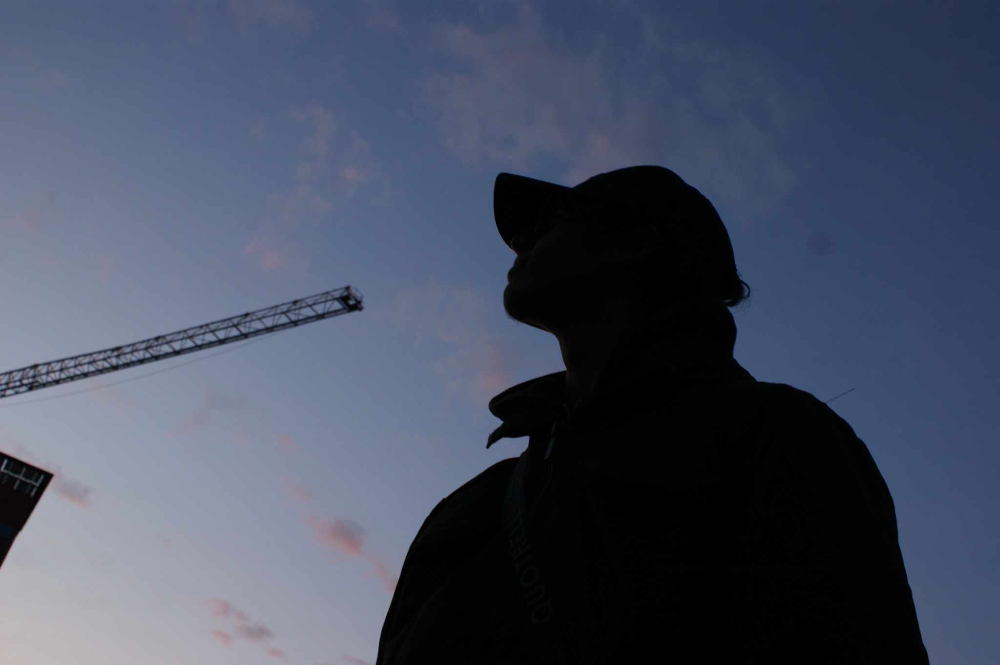
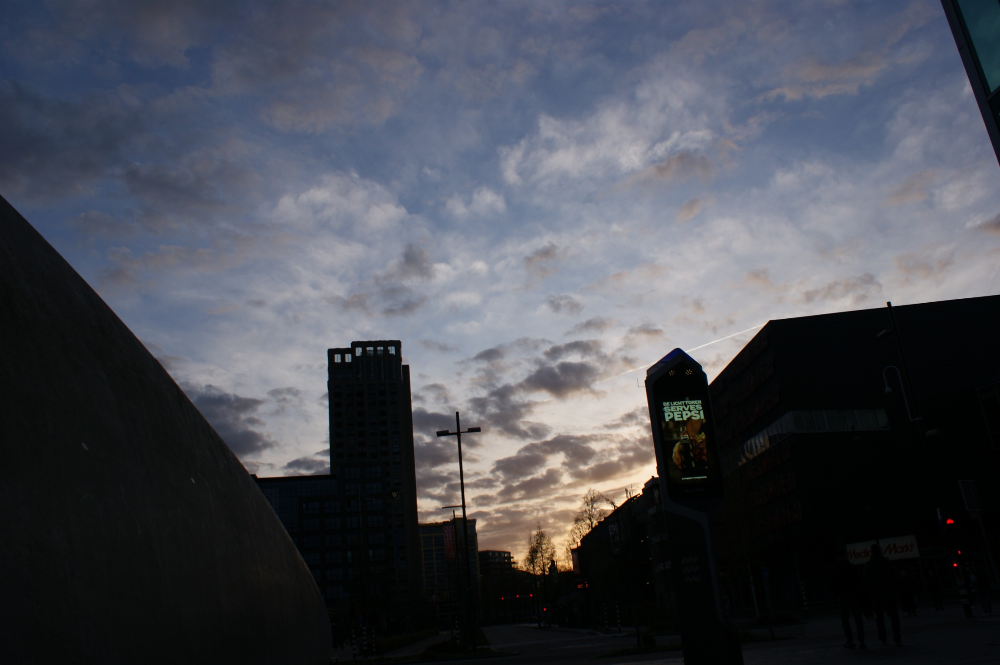
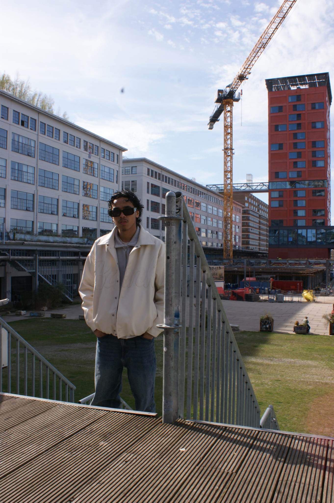

Automotive
Auto's, details, builds en social content met een cinematic uitstraling.

Creatieve fotografie door Lesley Samuels.
Voor mensen, verhalen, auto's & momenten.
Een kleine selectie van mijn huidige werk. Nog klein in omvang, maar bewust gekozen. Nieuwe shoots worden hier steeds toegevoegd.





Ik hou ervan om gewone momenten op een andere manier te bekijken en er een beeld van te maken dat karakter heeft.
Van een bruiloft tot een auto, van een portret tot een compleet idee: ik denk creatief met je mee en vertaal het naar beeld.
MEER OVER MIJ ↗Geen standaard pakket nodig? Vertel wat je wilt maken. We maken de shoot passend bij jouw idee.
Auto's, details, builds en social content met een cinematic uitstraling.
Persoonlijke portretten, lifestyle en creatieve shoots.
De sfeer, details en momenten van jullie dag.
Een concept of idee? We bouwen het beeld samen.
Twee fotografen, één team. Lesley en Jayden zijn samen te boeken voor shoots, events, automotive en creatieve producties.

Je kunt ons afzonderlijk boeken, maar ook samen als fotografieduo. Ideaal wanneer je meerdere perspectieven, meer dekking of simpelweg twee creatieve ogen op één project wilt.
BOEK HET DUO ↗Geen standaard aanpak. We maken samen een beeld dat past bij jou, je merk, je auto, je event of je idee.
Ik denk mee over locatie, licht, compositie en sfeer — van eerste idee tot eindbeeld.
Elke shoot krijgt een eigen aanpak. Geen lopende band, maar beelden die bij jou passen.
Een sterke foto moet niet alleen mooi zijn. Hij moet iets uitstralen en blijven hangen.
Echte ervaringen van mensen die met Lesloy Visuals hebben gewerkt.
“In de efteling tijdens de JINC Awards zat ik in de jury. Een mooie ervaring, en een perfect moment om foto's te laten maken. Ik heb door Lesley in het Fata Morgana Pangalais foto's laten maken, ik was erg tevreden met de service Lesley denkt creatief mee en de foto's waren super mooi!”
Van auto's en portretten tot events, bruiloften en creatieve concepten. Samen maken we beelden die blijven hangen.
Start your Lesloy experience with a 60-minute shoot and 15 professionally edited photos.
Heb je een shoot in gedachten? Vertel me wat je wilt maken. Ik denk met je mee.